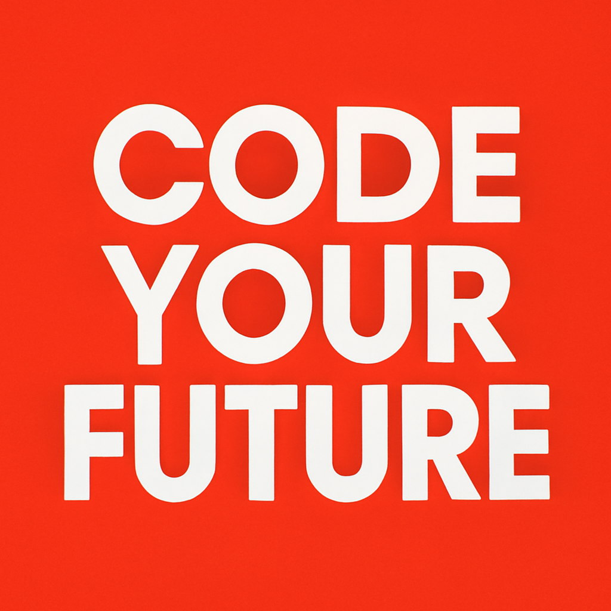

Welcome to the exhilarating world of coding in 2026! As technology continues to evolve at lightning speed, the demand for coding skills has never been higher. Whether you’re a complete beginner or looking to sharpen your tech-savvy skills, there’s never been a better time to dive into the world of programming.
By 2026, coding has transformed into a fundamental skill that transcends traditional tech roles. From healthcare to finance, industries worldwide are integrating coding into their core operations. As a result, the skills you acquire can open doors in countless sectors, making you a prized asset in the job market.
Gone are the days of trudging through boring textbooks. In 2026, you have an abundance of vibrant resources at your fingertips. Online platforms like Codecademy, freeCodeCamp, and Coursera have leveled up their offerings, making learning more interactive and engaging than ever!
Virtual Reality (VR) coding classrooms are also making waves, allowing you to immerse yourself in a 3D environment where you can practically "feel" your code come to life. Imagine debugging a program while walking through a virtual landscape! Talk about a game-changer!
Artificial Intelligence (AI) has revolutionized the way we learn to code. With AI-driven platforms, you can enjoy personalized learning experiences tailored to your individual pace and style. Struggling with loops? No problem! An intelligent tutor will guide you through step-by-step until you master it.
In 2026, coding isn’t just a solitary endeavor; it’s a collaborative art! Platforms like GitHub have evolved to offer enhanced features, allowing aspiring coders to connect, share, and collaborate on projects in real-time. Join coding communities and hackathons where you can learn from seasoned developers while building exciting projects.
So, why wait? The coding universe is ripe for exploration! With flexible learning tools, personalized experiences, and an emphasis on collaboration, 2026 is the year to unleash your coding potential. Whether your goal is to launch a startup, develop a game, or simply understand the tech that surrounds us, the possibilities are endless.
Get ready to embark on this thrilling journey. The future is coded, and it’s yours for the taking! Are you in?
In 2026, coding has become an essential skill across various industries, offering exciting opportunities for both beginners and seasoned developers. With innovative learning tools and a focus on collaboration, now is the perfect time to dive into the world of programming!

| Step | Model | Status | Time | Cost |
|---|---|---|---|---|
| article | openai/gpt-4o-mini | ok | 5.6s | $0.0003 |
| summary + social posts | openai/gpt-4o-mini | ok | 3.2s | $0.0002 |
| header image | dall-e-3 | failed | 0.7s | - |
| thumbnail | gpt-image-1 | ok | 16.1s | $0.0110 |
| narration | google/gemini-3.1-flash-tts-preview | ok | 21.9s | $0.0085 (est.) |
| header image | gpt-image-1 | ok | 54.4s | $0.0162 |
| narration check | gpt-4o-mini-transcribe | ok | 5.8s | - |
Total: $0.0362 - 107.6s of API time